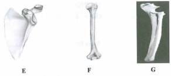
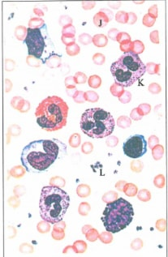
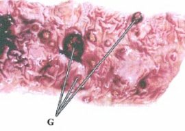
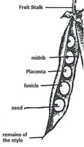

Answer all the questions in the spaces provided.
1. The photographs below represent three mammalian bones, labelled E, F and G.
E F G

(a) With reasons, identify the bones.
Identity
Bone E..........
Bone F..........
Bone G..........
(b) Name the joints formed at the anterior and posterior ends of F. Anterior end (1 mark)
Posterior end .......................,. (1 mark)
(c) State the types of movement facilitated by the joint at the anterior end of specimen labelled F. (1 mark)
(d) (i) Name the substance found inside the living tissue of the specimen represented in photograph F. (1 mark)
(ii) State the fiinction of the substance named in (d) (i) above.
(e) (i) Name the muscle bundle usually attached onto the front of the specimen represented in photograph F.
(ii) State the function of the muscle bundle named in (e) (i) above.
2. Below is a photograph of a blood smear from a normal individual. The arrangement is arbitrary and the number of blood elements is greater than what would normally occur in an actual microscopic field.

(a) (i) Name the blood elements labelled J, K and L. (3 marks)
J.........
K..........
L..........
(ii) State one function of each of the elements named in (a) (i) above. (3 marks)
K ..................
L ...................
(b) The photograph below is of a section of the human intestines of a patient suffering from a common parasitic disease.

(i) Name the disease.(1 mark)
(ii) Name the parasite that causes the disease in (b) (i) above.(1 mark)
(iii) State Evo control measures for the disease.(2 mark)
(iv) State the effects of having the parts labelled G in the patient’s intestines.
3. You are provided with a specimen labelled H. With the aid of a hand lens, examine the external features of the specimen.
(a) (i) What part of a plant is specimen H?
(ii) Give two reasons for your answer in (a) (i) above.
(b) Open up specimen H longitudinally.
Use a hand lens to observe the internal structures of specimen H. (1 mark)
(i) Draw and label the internal cut surface and associated structures of specimen H. (5 marks)
(ii) Explain how you would determine the magnification of the drawing made in (b) (i) above. (2 marks)
(iii) State the mode of dispersal for seeds of specimen H.(I mark)
(iv) Explain how seeds of specimen H are dispersed through the mode stated in (b) (iii) above. (3 marks)
scapula/shoulder blade;
Has a socket/glenoid cavity/depression to articulate with the ball/head of the humerus; Flat/triangular-shaped flat blade/triangular shaped/flat blade/flattened;; Has a spine/ridge/coracoids process/acromion for attachment of muscles
Humerus;
Has a ball/head/rounded head that articulates with the glenoid cavity/ socket on the scapula; Has condyles that articulate with radius and ulna;
G — Radius attached to ulna;
Ulna has a sigmoid notch for articulation with the shoulder joint/ lower end of the humerus; Has trochlea/olecranon fossa; Has greater/larger tuberosity Has biciptal groove;
• Ball and socket (joint);
Posterior end ..........(1 mark)
• Hinge joint
Rotation/up and down/side-ways (of the arm);
Bone marrow;
Manufacture of(red) blood cells
Biceps;
Contract/relax to move the lower arm (upwards);
J — Erythrocyte(s)/red blood cell;
K — Leucocyte/white blood cell;
L — Thrombocytes/Platelets
I — Transportation of oxygen/carbon (IV) oxide;
K — Engulf/attack pathogens/ foreign materials in the blood;
L — Blood clotting;
5 (b) The photograph below is of a section of the human intestines of a patient suffering from a common parasitic disease.
Amoebic dysentery;
Entamoeba hystolytica
(iii) State two control measures for the disease.(2 mark)
Boiling drinking water (before drinking);/ Chlorinating/treating drinking water; Keeping the food covered (to keep away flies/prevent contamination/proper storage of food; Proper faecal disposal in pit latrines/toilets/keeping the same clean/not to dispose faecal materials in the open/washing hands before handling food/ washing fruits/food before eating/after visiting toilet/latrine; Proper cooking of food; Washing hands before handling of food/washing fruits before eating
Fruit(s); Has two scars; point of attachment to remains of style; and point of attachment to the receptacle/fruit stalk Presence of seeds; Presence of pericarp/fruit wall Has epicarp, mesocarp and endocarp fused
Fruit(s);
Has two scars; point of attachment to remains of style; and point of attachment to the receptacle/fruit stalk Presence of seeds; Presence of pericarp/fruit wall Has epicarp, mesocarp and endocarp fused

Linear magnification — Length of drawing;
Actual length of object (specimen); OWTTE
Explosive mechanism/self-dispersal mechanism/self explossive
Dry pods; due to loss of water from the pod and pressure from within the pod; the pod opens (violently) along the sutures /1ines of weakness; seeds are thrown away from the parent plant/dispersed;